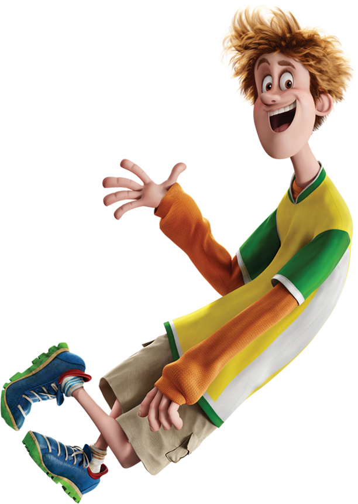
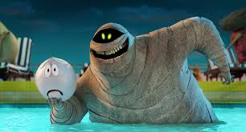
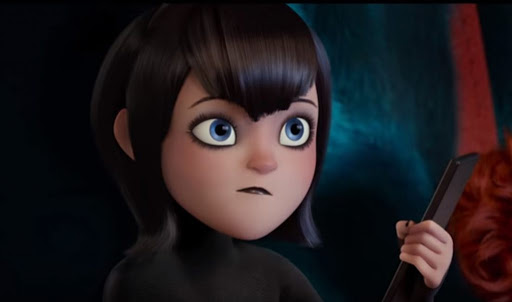
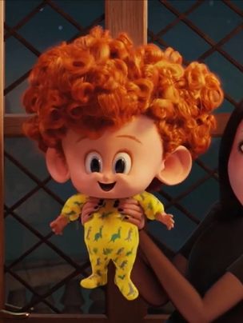
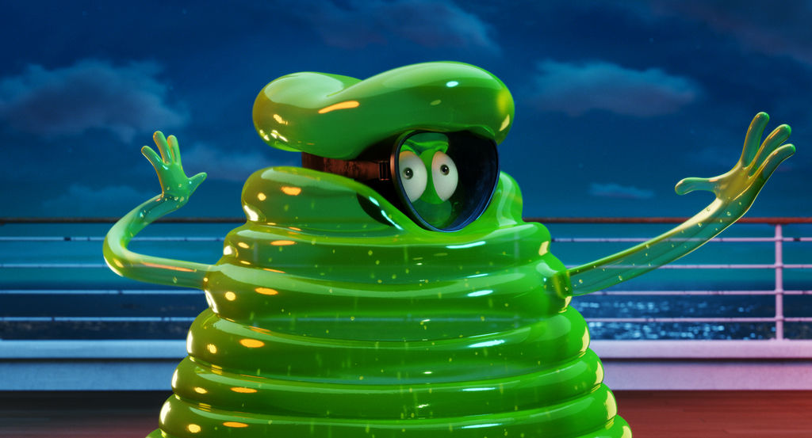
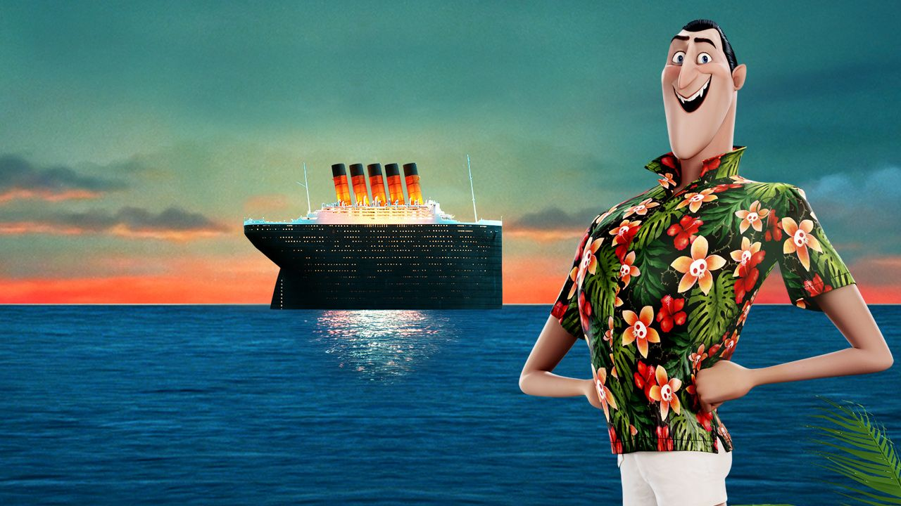
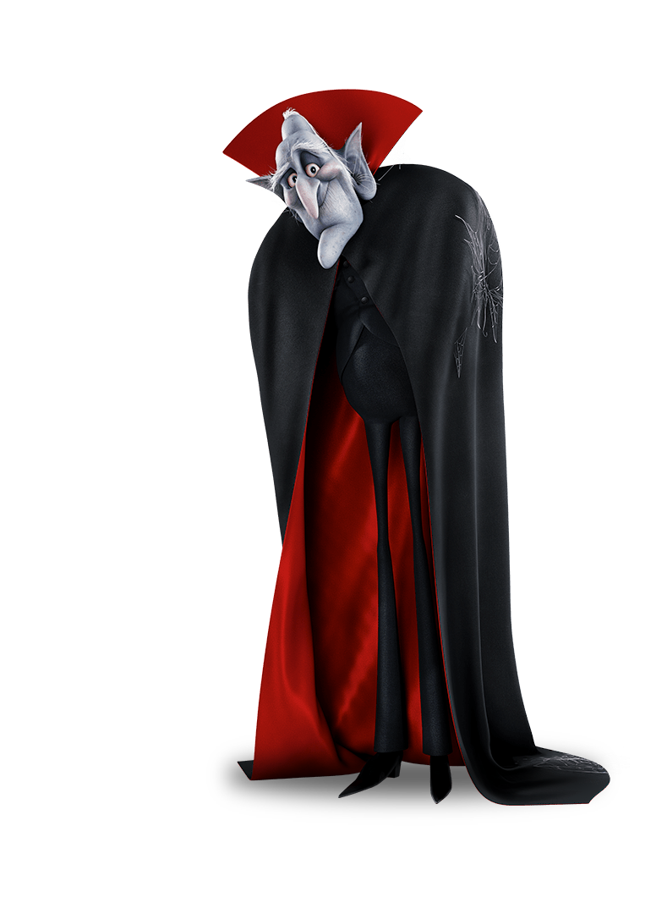
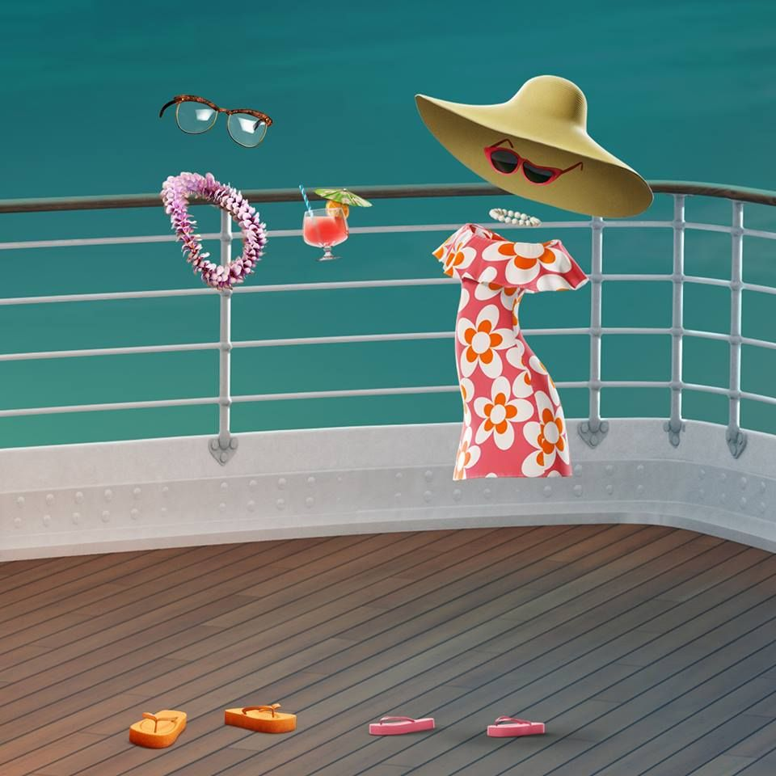
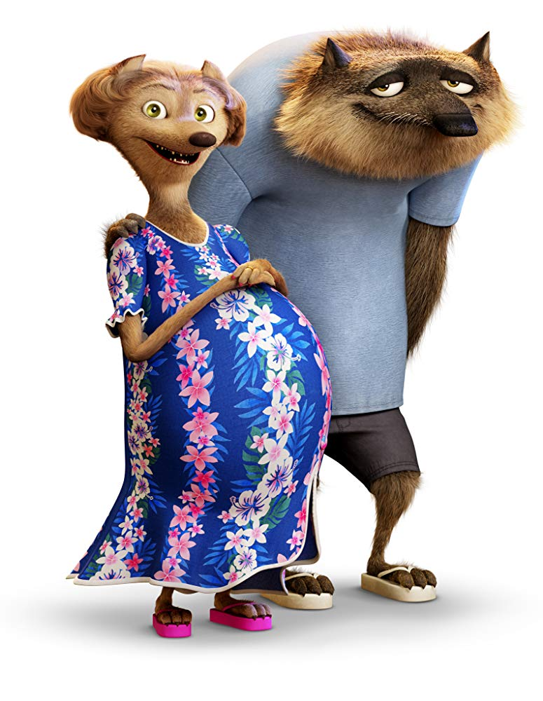

Hotel Transylvania 3 Movie Website
Produced By Peter Amendt
- 
- Johnny (Andy Samberg) Johnny is one of the few humans in Dracula's Pack, but he doesn't seem to mind. Married to Drac's daughter Mavis, and father to half-vampire son Dennis, Johnny always manages to stay mellow, but he’s stoked about the cruise’s all-night monster music festival.
- 
- Murray (Keegan-Micheal Key) Murray the mummy is a frequent guest at Hotel Transylvania, one of Dracula's best friends, and a former entertainer to the Pharaohs of Egypt. Murray's plans for his vacation cruise include being at the center of the pool party, playing water volleyball, and pampering himself with an all-day seaweed rewrap!
- 
- Mavis (Selena Gomez) Dracula's daughter Mavis is the organizing force behind this summer's family vacation, and just wants her father to get some rest and relaxation. Mavis is looking forward to having a blast with the entire Drac Pack and getting some quality time with Johnny, Dennis, and her overworked father.
- 
- Dennis (Asher Blinkoff) Dennis is the half-human, half-vampire son of Mavis and Johnny, and loves shape-shifting and his new pet: an elephant-sized puppy named Tinkles. As Dennis can’t bear to leave the mischievous puppy behind, he secretly sneaks Tinkles onto the cruise and disguises the massive dog as one of the passengers.
- 
- Blobby (Genndy Tartakovsky) As a long-standing member of Drac's Pack, Blobby is always up for adventure and a good time! When not tagging along with his friends, he also serves as his own lost and found and often discovers an unexpected thing or two inside his gelatin body.
- 
- Drac (Adam Sandler) As owner and hotel manager of Hotel Transylvania, Dracula spends most of his time taking care of his guests and never has time for himself. After agreeing to take a vacation with his family on the world’s first ever cruise for monsters, he now has to tackle learning how to unwind and taking the long-forgotten steps into the world of dating.
- 
- Vlad (Mel Brooks) After repairing the estranged relationship with his son, Dracula and accepting his human grandson-in-law, Johnny, Vlad joins his family on the monster cruise. Unlike his son, Vlad has no problem trading in cave and cape for a swimsuit and sunscreen!
- 
- Griffin (David Spade), Crystal (Chrissy Teigen) Longtime friend of Dracula, and regular guest at Hotel Transylvania, Griffin joins the family cruise with his new invisible girlfriend, Crystal. When not spending time with his new love, Griffin does not hesitate to give Drac dating advice -- all of it terrible.
- 
- Wayne (Steve Buscemi), Wanda (Molly Shanon) Wayne the Werewolf and his wife Wanda are most excited for the kids’ club on board the cruise ship, so they can spend some quality time together. Looking forward to getting away from taking care of dozens of children, Wayne and Wanda hope to pack a decade full of "me time" into their time on the cruise.

- Winnie (Sadie Sandler) Daughter of Wayne the Werewolf, Winnie is wild, rambunctious, and always game for a mischievous adventure. She also has a not-so-secret crush on Dennis.

- Frank (Kevin James) Drac's best friend Frank has a good head on his shoulders, most of the time. He wishes he could give Drac better advice about dating, but he's never been on one. He and his wife were made for each other, literally.